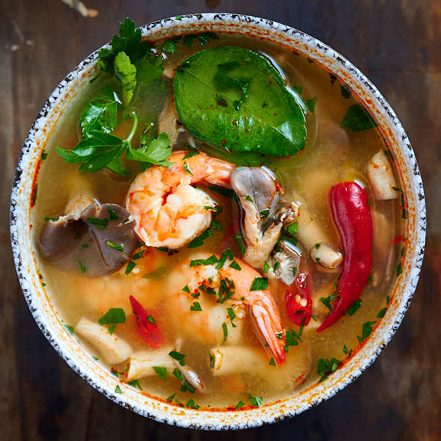

Tom Yum Soup (Tom Yum Goong)

Thai Soup for the Soul!
If I had to pick a national dish for Thailand this would be a strong contender because it's eaten all over the country and is loved by essentially everyone.
It's served at street-side eateries, fancy restaurants, and is commonly made at home. It was also a staple in my elementary school cafeteria!
Ingredients
- 4 cups shrimp stock, see recipe below
- 12 medium sized shrimp, head and shell on if possible
- 1 stalk lemongrass, smashed and cut into 1-2 inch pieces
- 6 makrut lime leaves, roughly torn into chunks, center stems removed
- 7-8 slices galangal, see note
- 2-5 Thai chilies, to taste, bruised and cut into large pieces
- 3 cups oyster mushroom, cut or tear large ones into bite-sized pieces
- 1/4 cup Thai chili paste
- 3 Tbsp fish sauce
- 1/2 cup fresh lime juice
- 1 tsp sugar
- Cilantro for garnish
For the Shrimp Stock
- Shrimp shells and heads from at least 12 shrimp
- 1 tablespoon neutral oil
- 4 1/2 cups water
- 1/2 onion, chopped
Directions
For the shrimp stock
- Peel the shrimp and remove the heads, then add all the shells and heads into a stainless steel pot with a little bit of vegetable oil. Saute over medium high heat, pressing out any tomalley from the shrimp heads with your spatula.
- Once the bits that are stuck to the bottom of the pot start to brown and smell wonderfully like grilled shrimp, deglaze with the water and scrape all the bits off the bottom of the pot.
- Add the onions, if desired, and simmer over medium low heat for 45 minutes. Strain, making sure to get out any liquid from inside the shrimp heads. You need about 4 cups for the soup, but if you don't have enough you can add water.
For the Tom Yum Soup
- Add the shrimp or chicken stock, lemongrass, makrut lime leaves, galangal and chilies to the pot. Bring to a boil and let it boil for about 5 minutes until you can smell the fragrance of the herbs from the pot.
- When the soup is done simmering, add the oyster mushrooms, and bring the soup back to a boil.
- Once the soup comes back to a boil, add the shrimp and when the soup just starts to bubble again, turn off the heat. Let the residual heat of the soup cook the shrimp completely; another minute or so. (If you're using very large shrimp, you may need to cook it longer, but check first to avoid overcooking shrimp).
- Add the lime juice, fish sauce, chili paste, and sugar and stir. Taste and adjust the seasoning to your liking. (You may need to add a little more sugar, depending on how sweet your brand of chili paste is.)
- Garnish with cilantro leaves and serve with rice, or turn it into a “Kuay Tiew Tom Yum” by pouring the soup over rice noodles for a pho-style meal!
Return to main page
Source